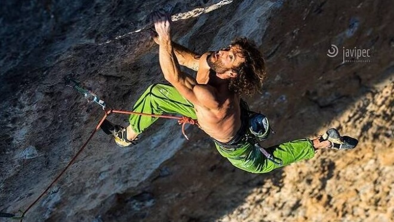

Ha conseguido realizar la vía más dura de su carrera con esta línea de Chris Sharma. Es el cuarto escalador español en alcanzar este grado de dificultad.
14/04/2018 13:38
Patxi Usobiaga ha dado un paso más en su trayectoria como escalador. El de Eibar ha conseguido el encadenamiento de Pachamama en Oliana, una vía para la que sugiere 9a+/b, después de que otros repetidores hubieran apuntado que es más dura que la mayoría de líneas de 9a+.
Él mismo lo anunciaba en sus redes sociales con un escueto mensaje: “La batalla terminó. Pachamama 9a+/b top”. Texto al que acompañaba una espectacular foto en uno de los numerosos intentos en la vía.
Se da la circunstancia de que Patxi Usobiaga había intentado por primera vez Pachamama años atrás, incluso antes de abandonar la competición al máximo nivel. Entonces, la vía se le resistió. Y el posterior accidente de tráfico en que se produjo una lesión en las cervicales que lo llevaría a dejar la escalada por un tiempo parecían confabular para que se olvidara definitivamente de ella.
Sin embargo, en los últimos tiempos, Patxi Usobiaga ha demostrado que vuelve a ser el de antes... o incluso mejor, según se desprende de sus encadenamientos en roca. Después de regresar al noveno grado en 2014 con Celedon 9a en Ilarduia, ha convertido Oliana en su particular patio de juegos y los resultados han ido cayendo sin prisa pero sin pausa. En marzo de este año dejó la primera muestra con la primera ascensión de Patxitxulo 9a/+. Unas semanas más tarde, en abril, conseguía recuperar su máximo grado de antes de la lesión con Papichulo 9a+. Y ahora da un paso más adelante con la repetición de Pachamama 9a+/b
De hecho, Patxi ya nos adelantó en la entrevista que tuvimos con él hace unos meses que tenía entre ceja y ceja cuatro vías en el rango del 9a+ en Oliana: ya ha tachado Papichulo y Pachamama, pero todavía le restan Joe mama y Power inverter. Tampoco sería de extrañar que ahora quisiera ir un poco más allá, habida cuenta que Oliana alberga una de las mayores concentraciones de vías de 9b del mundo, con Chaxiraxi, Fight or flight y Mamichula, además de la mítica La dura dura 9b+
Pachamama es una línea que ya acumula cierta historia. Fue una de las creaciones de Chris Sharma en el Contrafort del Rumbau. El mismo californiano realizó la primera ascensión, allá por 2009. Pasaron más de dos años hasta que Sachi Amma llevara a cabo la primera repetición, a finales de 2011. Y otros cuatro para la segunda muesca, a cargo de Ramon Julián.
Este año 2017, la línea parece haber cobrado vida y protagonismo, con hasta cuatro nuevas repeticiones. Jakob Schubert estrenó el año con Pachamama en enero; Adam Ondra la hizo en febrero, y el turno de Jonathan Siegrist llegó en abril. La de Patxi Usobiaga es la sexta repetición.
En cuanto al grado, si bien inicialmente surgió como 9a+, los repetidores y otros escaladores que la han probado sin llegar a encadenarla han ido situándola más allá de ese grado, en un punto intermedio entre el 9a+ y el 9b, que correspondería al 9a+/b actualmente consensuado
Con la propuesta de grado de 9a+/b, Patxi Usobiaga se incorpora a un selectísimo grupo de roqueros de nuestro país. Si ya son escasamente una docena los que han conseguido encadenar 9a+, se pueden contar con los dedos de una mano los que han pasado de ese grado
La primera vez que alguien habló de ello fue Bernabé Fernández en 2003 con su polémico y nunca demostrado encadenamiento de Chilam balam en Villanueva del Rosario, para el que propuso 9b+ (las realizaciones recientes lo sitúan en el 9a+/b). Posteriormente, en 2007, llegó la propuesta de 9b de Dani Andrada con su híbrida Ali Hulk extension sit start en la cueva de Alí Babá de Rodellar.
El siguiente en subirse al carro fue Ramon Julián, quien en 2012 realizó la primera ascensión de Catxasa R2 para la que propuso 9a+/b en Santa Linya. Y en 2015, le correspondía a Edu Marín con Chilam balam 9a+/b.